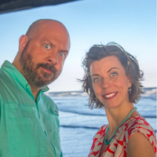

Charissa Maes | WDD 130
My name is Charissa Maes. I currently live in Fort Worth, TX. I have been married for over 30 years now and we have 3 adult sons, plus 1 bonus son, who live in the midwest with their families. I decided last year that I should go back to school and learn something completely foreign, software and web development. It is a journey that Heavenly Father is helping me with every step of the way. I am very excited to see where this journey takes me. I've already grown so much during this new process of learning. I have been stretched so far beyond my comfort zone, but I know that is where growth happens. I can't wait to look back on these days with fondness and gratitude for the opportunity to learn something new at this stage of my life. I hope I can stand as an example to the rest of my family not only of how important my Heavenly Father is to me but also of how important learning and growing is no matter what stage of life we are in.